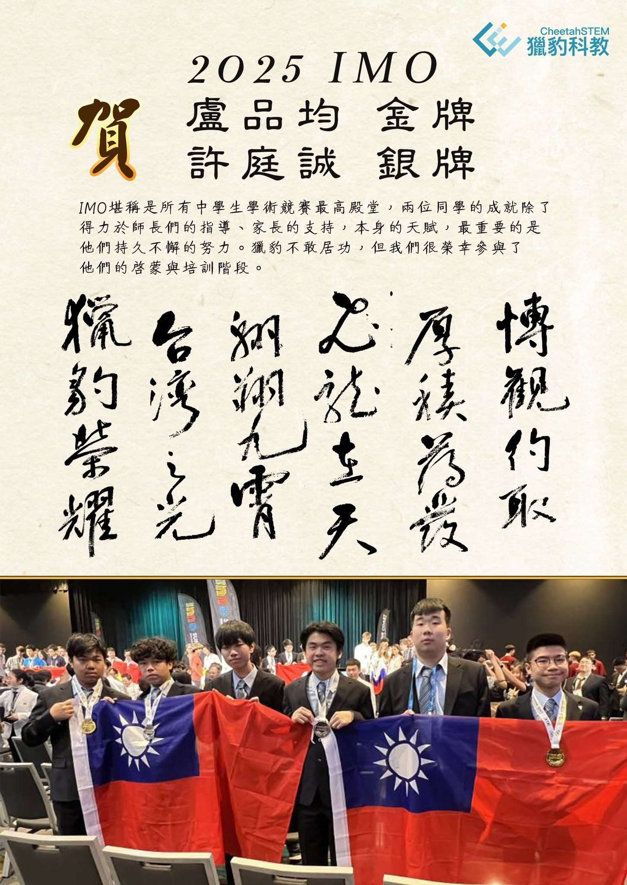

2025 IMO 拾零/兼談AI（上）
2025 IMO（國際數學奧林匹亞競賽）剛結束 ，首先恭喜台灣代表隊獲得二金二銀的佳績‼️
其中獵豹獵豹實體課第二屆學長盧品均、許庭誠分獲金、銀。
1 °
IMO今年有110國共630名選手參賽，此競賽是所有國際奧林匹亞學術競賽中，參與國家最多、選手培訓期最長、競爭最激烈的，堪稱中學生學術競賽的最高殿堂。
參賽選手多是經由各國/地區教育主管部門層層選拔脫穎而出。每個參賽國/地區選派4-6名，特殊情況的選手以個人名義參賽（如今年的俄羅斯）。
獲獎者除了獲得各國政府的獎勵外，也是全球頂尖大學爭取的學生。
（台灣選手獲金、銀、銅牌獎者由教育部頒發20萬元、10萬元及5萬元獎學金並可保送大學各本學系或推薦入大學各學系。）
台灣歷年獲獎同學多數進入國內外頂尖大學的電機、資工、數學、物理等科系。
2°
IMO競賽分兩天進行 ，每天三題，作答時間4.5小時。
一題七分，滿分42（都是非選擇題形式，視作答情況可部分給分）。
比賽以個人方式敘獎。
今年金牌分數線為35，共67位選手獲金牌。
3°
另外，主辦方也統計各國選手的總分排出順序。
中國隊今年以六面金牌排名第一（有兩位選手獲滿分）。
美國隊、韓國隊分列二、三。
第四、第五則是日本與波蘭。
華人或東（南）亞地區的年輕人受國情與文化影響，特別勤奮努力。
以排名前25的國家為例：
華人地區：中國 （No.1),新加坡 (No.8),香港 (No.11),台灣(No.20)
東亞地區：韓國（No.3),日本（No.4)
東南亞：越南（No.9),泰國（No.25)
值得關注的是，
排名第二的美國隊成員有四名為華裔、一名女選手母親是華人。
排名15、23的澳洲、加拿大的六名隊員都是華裔。
4°
今年第二天試題壓軸的P6，難度特高（戲稱魔王題）只有六位選手獲得七分（滿分）。
其中有五位獲得了滿分42的絕對金牌：
中國隊2位、加拿大隊1位
日本隊1位、戰鬥民族俄羅斯1位。
